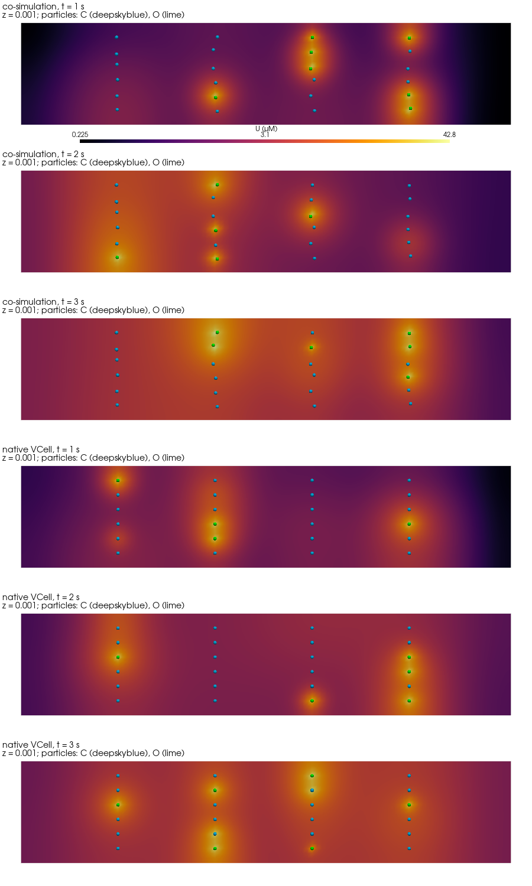
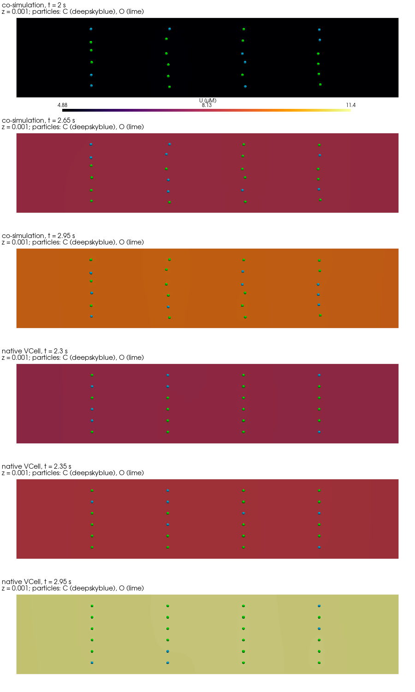
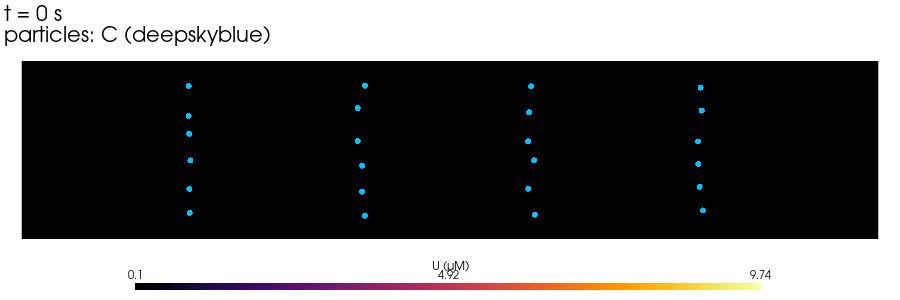

vcell-hybrid-paper-benchmarks — figure gallery
10 figures across 3 studies. Use the list on the left to jump to any study; each figure has its own ↓ download.
Schaff et al. 2016, Test 1 / Fig 1B: separable calcium sparks on both solvers
separable-calcium-sparks



Schaff et al. 2016, Test 2 / Fig 2: coupled calcium sparks in the fast-diffusion limit, both solvers
coupled-sparks-fast-diffusion




Schaff et al. 2016, Tests 3–5 / Figs 4–6: a coupled single channel against direct Fokker–Planck solutions
single-channel-fokker-planck